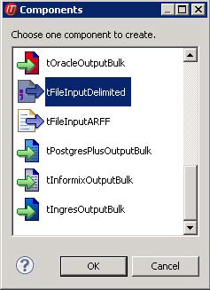
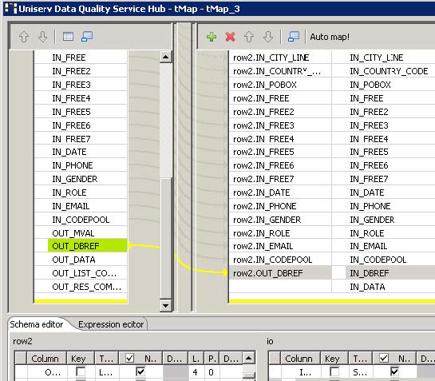
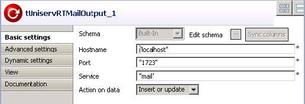

Warning
This component will be available in the Palette of the studio on the condition that you have subscribed to the relevant edition of Data Quality Service Hub Studio.
|
Component family |
Data quality | |
|
Function |
tUniservRTMailSearch searches for similar data based on the given input record. | |
|
Purpose |
tUniservRTMailSearch searches for duplicate values and adds additional data to each record. | |
|
Basic settings |
Schema and Edit schema |
A schema is a row description, i.e. it defines the number of fields that will be processed and passed on to the next component. The schema is either built-in or remote in the Repository. |
|
|
Host name | Server host name between double quotation marks. |
|
|
Port | Listening port number of the server between double quotation marks. |
|
|
Service |
The service name is |
|
|
Maximum of displayed duplicates (0 = All) |
Enter the maximum number of duplicates to be displayed in the Run view. The default value is 0, which means that all duplicates will be displayed (up to 1000 duplicates can be displayed). |
|
|
Use rejects |
Select this check box to set parameters based on which duplicate records should be added to the reject flow. Then set the: Element: Duplicate count. Operator: <, <=, =, >=, >. Value: Enter the number manually. |
|
Advanced settings |
Uniserv Parameters |
For detailed information, please refer to the Uniserv user manual mailRetrieval. |
|
|
tStatCatcher Statistics | Select this check box to collect log data at the Job and the component levels. |
|
Usage |
tUniservRTMailSearch requires an input component and one or more output components. | |
|
Limitation |
To use tUniservRTMailSearch, the Uniserv software mailRetrieval must be installed. NoteBefore the first use of tUniservRTMailSearch, an index pool must be created. You can create the index pool with tUniservRTMailBulk. | |
This scenario describes a batch job that adds contacts to the index pool of mailRetrieval. Before the addition, it must be checked whether these contacts already exist.
The input file for this scenario is already saved in the Repository, so that all schema metadata is available.
Note
Please note that the data from the input source must be related to the same country.
Procedure 6.1. Dropping and connecting the components
In the Repository view, expand the Metadata node and the directory in which the file is saved. Then drag this file into the design workspace.
The dialog box below appears.
Select tFileInputDelimited and then click OK to close the dialog box.
The component is displayed in the workspace.
Drag the following components from the Palette into the design workspace: two tMap components, tUniservRTMailSearch and tUniservRTMailOutput .
Connect the components via Row > Main.

During the process, accept the schema from tUniservRTMailSearch by clicking Yes in the validation window.

Procedure 6.2. Configuring the components
Double-click tMap_1 to open the schema mapping window. On the left is the structure of the input file and on the right is the schema of tUniservRTMailSearch. At the bottom lies the Schema Editor, where you can find the attributes of the individual columns and edit them.

Assign the columns of the input file to the respective columns of tUniservRTMailSearch. For this purpose, select a column of the input source and drag it onto the appropriate column on the right side.
When your input list contains a reference ID, you should adopt it. In order to do so, create a new column IN_DBREF in the Schema Editor and connect it with your reference ID.
Click OK to close the window.
Double-click tUniservRTMailSearch to open its Basic settings view.

Under Maximum of displayed "duplicates", enter 0 to display all the duplicates.
Select Define rejects to open the rejects definition window.
Click the [+] button to insert a new line in the window. Select Duplicate count under the element column, > under the operator column, and 0 under the value column. So all the existing contacts are disqualified and only the new contact will be added to the index pool.
Enter the Advanced settings view and check the parameters. Reasonable parameters are preset. Detailed information can be found in the manual mailRetrieval.
Double-click tMap_3 to open schema mapping window. On the left is the schema of tUniservRTMailSearch and on the right is the schema of tUniservRTMailOutput.
Click Auto map! to assign the fields automatically.
The only field that must be assigned manually is the reference ID. In order to do so, drag OUT-DBREF from the left side onto the field IN_DBREF on the right side.
Click OK to close the dialog box.
Double-click tUniservRTMailOutput to open the Basic settings view.
From the Action on Data list, select Insert or update. This way, all new contacts are added to the index pool.